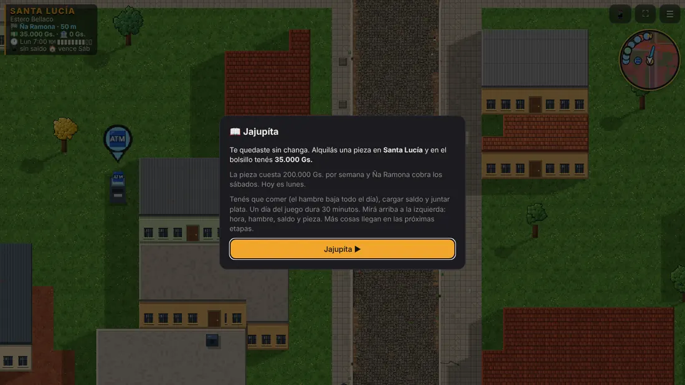
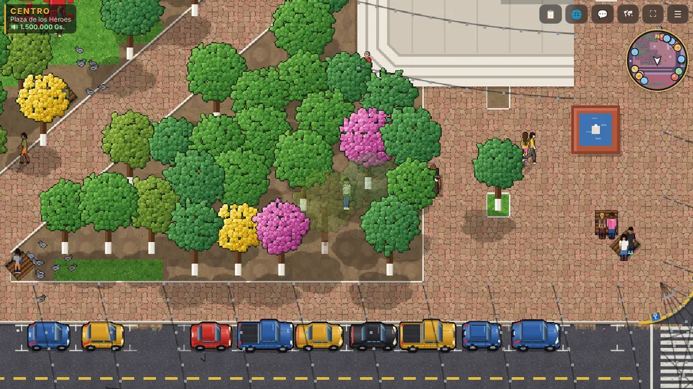
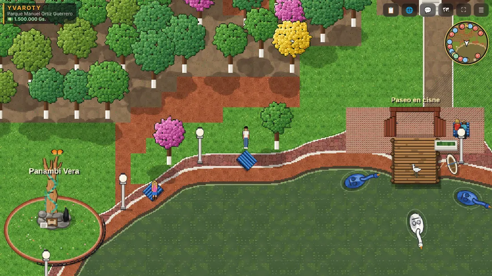
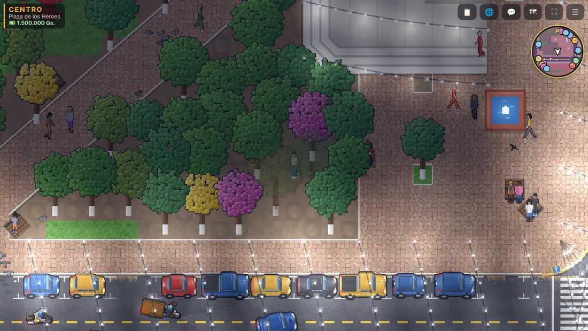
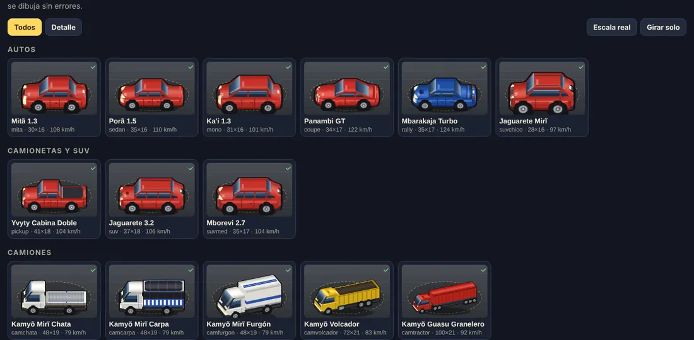
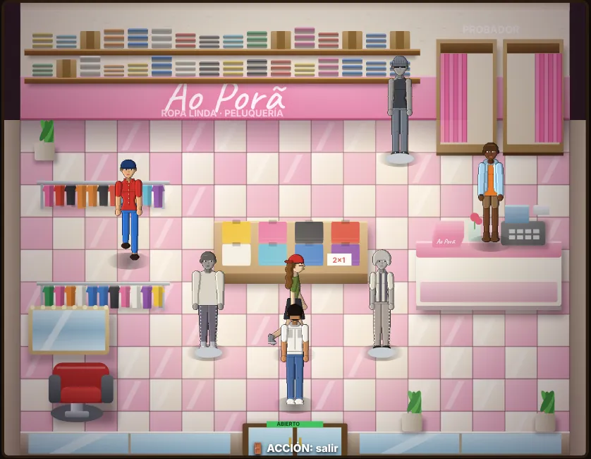
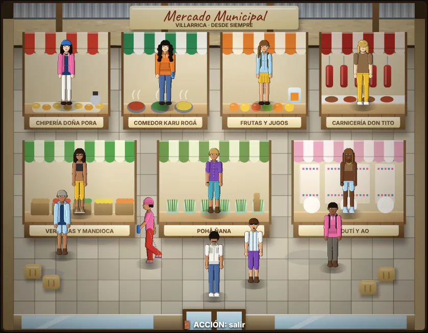
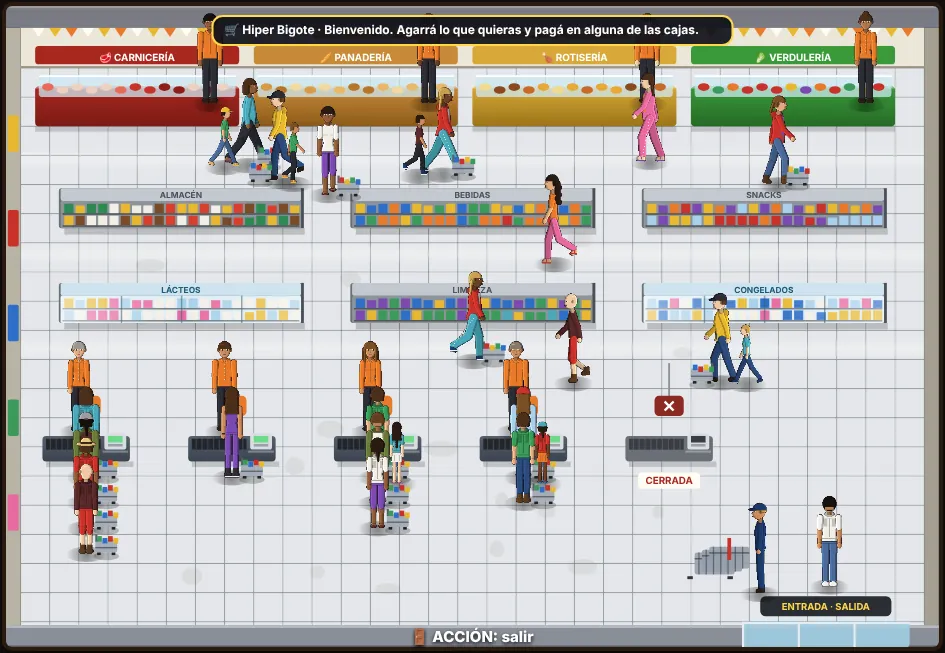
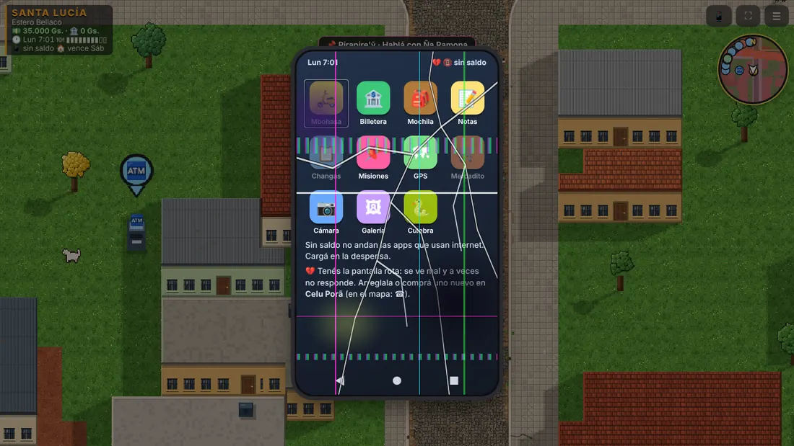
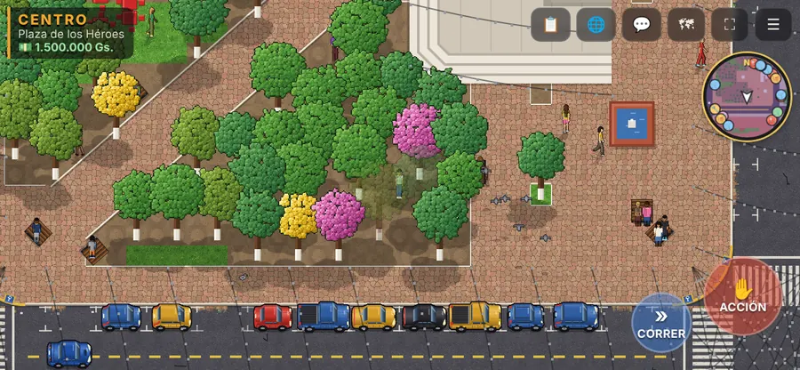

Un juego donde recorrés la ciudad real de Villarrica, con sus calles, su plaza y su parque, a pie, en moto, en auto o en karumbe. Lo hice con la mirada de los juegos de celular de 2006, pero con la tecnología de hoy.
Villarrica es un juego de mundo abierto: no hay niveles ni pantallas, hay una ciudad entera para recorrer. La ves desde arriba, como en un mapa que cobra vida: la gente camina, el tránsito circula, cae la noche y se prenden los faroles.
El mapa sale de datos reales de OpenStreetMap y de los barrios oficiales del INE, así que las calles, las manzanas, las plazas y el parque están donde están en la vida real. Los lugares más conocidos del Centro los fui dibujando a mano con fotos y videos. Todo el arte, la música y el código son originales.
5 × 5 kmde ciudad real, con sus 8 barrios
26vehículos: motos, autos, colectivos y camiones
2 modosHistoria y Libre
Día y nochecon sol, sombras y clima
Onlinejugá con amigos con un código
Dos formas de jugar

Historia
Jajupíta: «vamos a subir»
Empezás con casi nada: sin trabajo, con una pieza alquilada en Santa Lucía y 35.000 Gs. en el bolsillo. De a poco vas a pagar la pieza, comer, vender chipa, conseguir tu moto y hacerte un lugar en la ciudad.
Un día del juego dura 30 minutos reales.
Hambre, alquiler, saldo del celular y deudas: todo se paga.
Misiones con personajes y diálogos con humor y frases en jopara.
Los barrios se van abriendo a medida que avanzás.

Libre
Paseo libre
Sin presión: empezás con 1.500.000 Gs., con todos los barrios abiertos y la hora real de tu reloj. Es ideal para recorrer, probar vehículos, ir de compras o jugar online con amigos.
Podés teletransportarte marcando un destino en el mapa.
Podés llevarte los vehículos del tránsito.
Es el modo del multijugador.
Qué vas a encontrar
Un recorrido por lo que tiene el juego hoy. Se sigue agregando cosas.
Una ciudad que se reconoce
La Plaza de los Héroes con su laja, sus lapachos (tajy rosados y amarillos), el anfiteatro y las guirnaldas; la Municipalidad y el Teatro; la calle Mariscal López; el cuartel de bomberos; el hospital, las comisarías y la terminal.
Veredas, empedrado, calles de tierra colorada y esquinas redondeadas.
Cebras, cajones de estacionamiento y rayitas de moto como en la calle real.
Barrios con carácter propio: más autos y casas más grandes en unos, más motos y casas humildes en otros.

El parque de la laguna Ykua Pytã: cisnes de pedal, carpinchos, patos y garzas.
De día, de noche y con lluvia
La ciudad cambia durante el día. El sol mueve las sombras, el atardecer tiñe todo de naranja y de noche se prenden los faroles, las vidrieras y las luces de los autos.
Hora real, siempre de día o siempre de noche, a elección.
Clima real de Villarrica (calor, frío, nublado o lluvia) o el que elijas.
Boliches y pubs que solo abren de noche.

La misma plaza, de noche.
Motos, autos, colectivos y hasta un karumbe
Hay 26 vehículos de diseño propio, con nombres inventados en guaraní: motos cub, mini y de calle, motocargas, una bici, autos, camionetas, colectivos, camiones y el coche de caballo de Villarrica.
Se ven en perspectiva, con el techo y el costado.
Tienen tablero con nafta y llantas que se pinchan.
Podés tunearlos en el taller: pintura, llantas, neón y más.
Choques con rebote, derrapes y abolladuras.

Algunos de los vehículos del juego.
Lugares por dentro
Muchos lugares se pueden visitar caminando por adentro, con su gente y sus cosas.

Tienda de ropa y peluquería
Probate ropa, cambiate el pelo y armá tu propio personaje.

Mercado Municipal
Siete puestos con comida de la zona: chipa, sopa paraguaya, tereré con yuyos.

Supermercados
Pasillos, carritos, filas en las cajas y mucha gente comprando.
Además: el Teatro Municipal con cine sincronizado, tu pieza (con gato y cucaracha), la despensa, el taller y los boliches de noche.
Tu celular, adentro del juego
En el modo Historia tenés un celular con apps: pedí una moto o un auto con Mbohasa, mirá tu billetera, sacá fotos con la cámara, usá el GPS o jugá a la culebra. Ojo: empieza con la pantalla rota y hay que arreglarla.
Dos tipos de plata: efectivo y billetera electrónica.
Préstamos del banco y de la financiera (con sus intereses).
Fotos de la ciudad con lugar y hora.

El celular del modo Historia.
Una ciudad con vida
Gente en la calle: peatones con jopara, vendedores de empanadas y helados, artesanos y perros callejeros.
Animales: vacas y caballos en las afueras, carpinchos y garzas en el parque, loros, gatos y gallinas en los patios.
Emergencias: la ambulancia, los bomberos voluntarios y la Policía salen de sus bases reales cuando pasa algo.
Online: creá una sala con un código y recorré la ciudad con amigos: se ven, se hablan por chat y pueden subirse de pasajeros a la moto del otro.
Cómo se juega
Anda en la compu, en el celular y con control de consola. En el celular se puede instalar como una app desde el menú del navegador.
Moverse
WASD o las flechas · en el celular, el joystick
Acción (hablar, entrar, comprar)
Espacio o Enter · botón ACCIÓN
Correr
Shift · botón CORRER
Subir o bajar de un vehículo
F
Mapa y GPS
M · marcá un destino y seguí la flecha
Celular (Historia)
C
Menú
Esc

En el celular, acostado, con controles táctiles.
Para tener en cuenta: el juego tiene humor y situaciones de la calle. En el modo Libre se pueden robar vehículos, la Policía te persigue y hay armas de prueba, sin sangre. Si lo va a jugar un menor, conviene mirarlo antes.
¿Listo para recorrer Villarrica?
Se abre al instante, sin instalar nada y sin cuenta. Si vas a jugar online, tienen que entrar los dos al mismo código de sala.